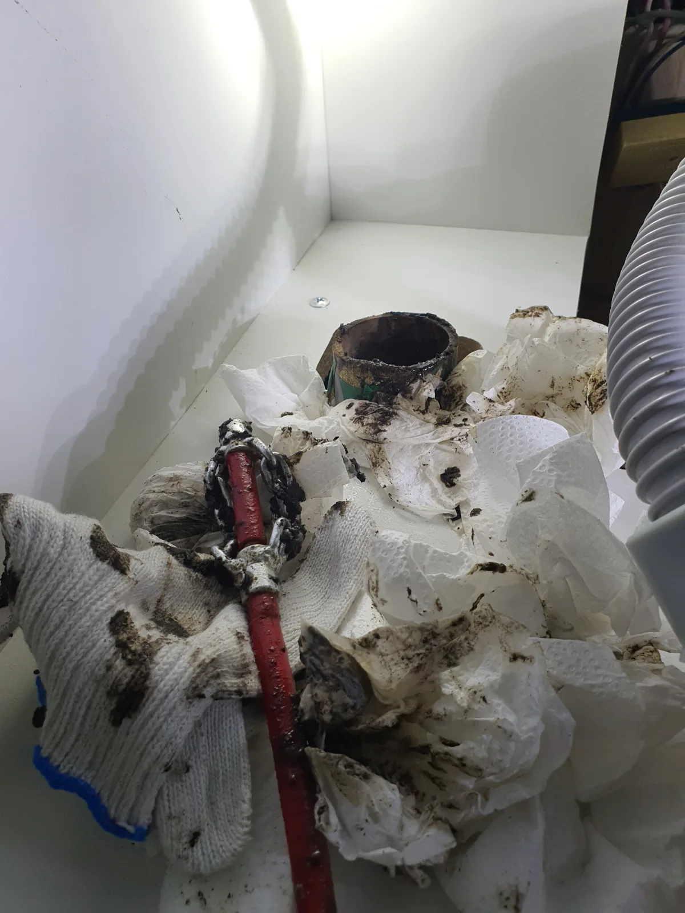
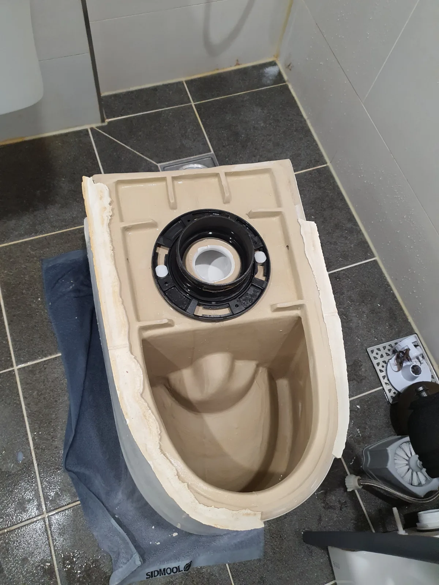

수지구 풍덕천동 싱크대막힘 | 용인시 수지구 풍덕천동 싱크대막힘 주철배관 슬러지
수지구 풍덕천동 싱크대막힘 오래된 아파트의 싱크대 하부 주철배관에 쌓인 검은 기름 슬러지를 샤프트로 제거하고 통수 후 배관 내시경으로 내부
경기도 FIELD NOTES
실제 출동 기록이 있는 지역을 중심으로 변기·싱크대·하수구·배관 작업 사례를 연결합니다.

수지구 풍덕천동 싱크대막힘 오래된 아파트의 싱크대 하부 주철배관에 쌓인 검은 기름 슬러지를 샤프트로 제거하고 통수 후 배관 내시경으로 내부

수원시 영통구 매탄동 변기막힘 출근 전 급하게 접수된 매탄동 변기막힘 현장으로 출동해 관통기와 석션을 시도한 뒤 변기를 탈거하고 에어건 작업으로

화성시 동탄구 청계동 싱크대막힘 아파트에 자정에 도착해 싱크대 배관의 기름때 막힘을 점검했습니다 석션과 리지드 K9 102 샤프트 배관스케일링을

수지구 풍덕천동 변기막힘 변기 안에 길쭉한 튜브형 치약이 걸려 배수가 막힌 현장으로 석션으로 회수되지 않아 변기를 탈거하고 에어건으로

파주시 동패동 싱크대막힘 샤프트 배관스케일링과 석션으로 배관 내부의 굳은 기름때를 처리하는 통수 작업 진행

시흥시 하상동 변기막힘 변기 꿀렁거림으로 탈거 후 오수관을 샤프트와 에어건으로 작업하고 점성 오염물 제거 및 배수 확인

하남시 풍산동 싱크대막힘 내시경 점검 후 싱크대 하부와 싱크볼에서 석션으로 오염수 및 음식물 제거 후 배수 확인

수지구 풍덕천동 변기막힘 석션 작업 후 변기를 탈거해 하부 배출구와 오수배관을 확인하고 필요한 배관 작업 진행

안양시 만안구 안양동 변기막힘 반복 막힘으로 변기를 탈거해 에어건으로 이물질을 제거한 뒤 재설치

수원시 권선구 세류동 변기막힘 변기를 탈거하지 않고 석션으로 물티슈와 숙주 등 음식물을 회수한 뒤 재발 예방 안내

남양주시 별내동 싱크대막힘 새벽 싱크대 막힘으로 출동해 내시경 점검 후 샤프트와 석션으로 작업하고 정상 배수 확보

시흥시 하중동 변기막힘 변기를 탈거해 오수관으로 접근하고 관통기 및 샤프트로 이물질 제거 후 원상 복구와 배수 확인